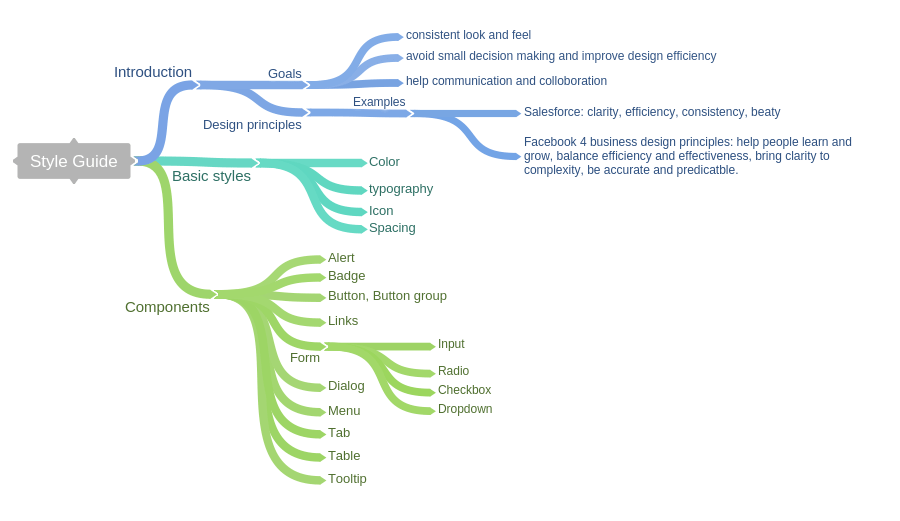
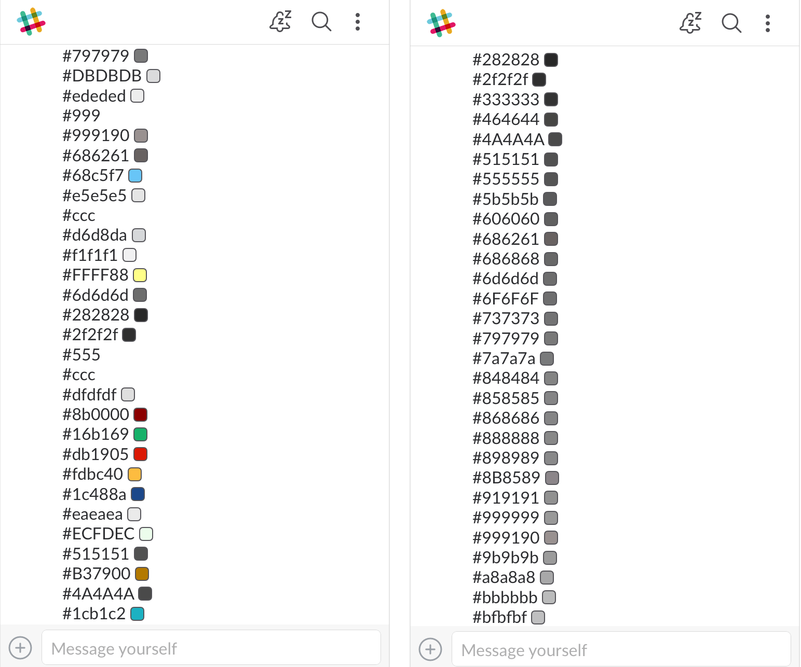
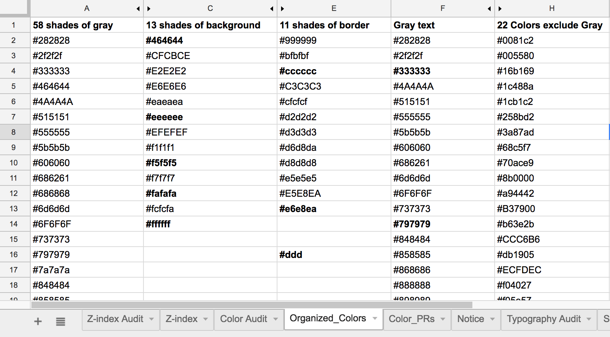
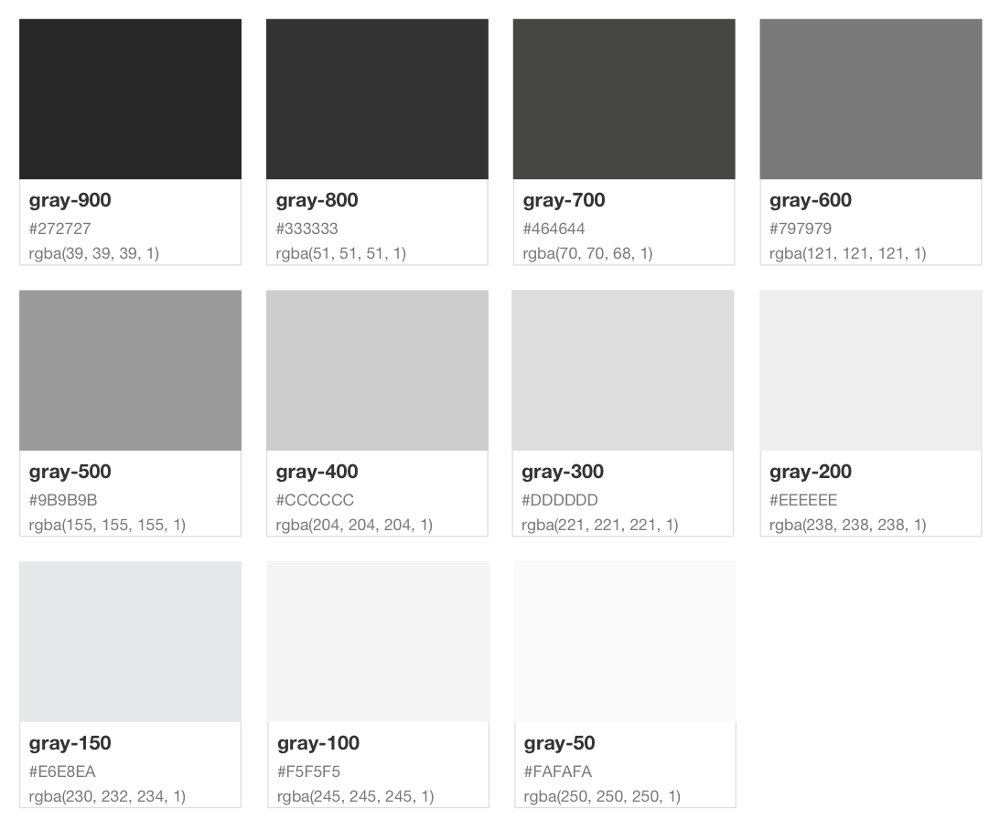
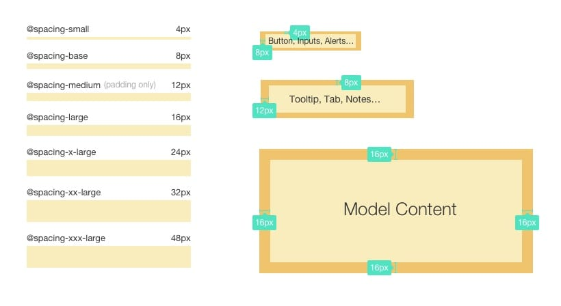

Building a style guide from scratch
Background
I joined Databricks as the second product designer. When I started to work on my first design task, there were no existing design assets to reuse. I inspected the CSS style of existing product to understand which color, font size, and spacing I should use for the new elements. To make my life easier for future design iterations, I started to acculmuate design assets on Sketch and also build an online design style guide for easy access.
Role
From the beginning I understand building a style guide is not something urgent, but very important for improving design productivity. So I worked on the style guide whenever I was not busy with other design requests. It took me 3 major iterations to designed and developed the styleguide from scratch.
Design Process
First version — static image on the web
After a few design tasks, I accumulated several current pages in Sketch and put together a set of guidelines for colors, fonts, icons and spacings. With a goal of organizing the content better and putting it on the web for easy access, I looked at other style guide examples:
- Guidelines such as Google Material Design, Apple iOS Human interface Guidelines
- UI frameworks like Bootstrap, and Patternfly (a UI framework for enterprise web applications)
- Design systems such as Salesforce lightning design system, and ANT design
Based on those examples, I drafted the content requirement:
To get things out quickly, I organized the basic styles and components on Sketch, then exported them as images to embed in HTML. After learning how to create GitHub page, my first version of style guide went live. Hooray!
Second version — making it copiable
I was happy about having an online style reference, but to be honest, it was a MVP — I could not even copy the color hex code, or a font awesome icon. What we need is a living style guide, documenting the styles and components, and keeping them in sync with production code, how exciting is that!
This article introduces several tools for building the documentation of front-end code. Unfortunately, CSS parser and static style guide generators are too complicated for me. So I took a step back, copied our LESS codes, used a few variables in style guide, learnt Grunt to auto-generate CSS code, and pretended I was using production code for style guide. I also added basic components from Bootstrap. Then I called it, a step towards living style guide, and also made it responsive.
Third iteration — clean up production code
One of my go-to engineers, also a great friend, shared feedback on my previous style guide.
Currently we don’t really use it for our product, and I think the main reason is we don’t have reusable UI component which follows this guide.
He is right. Although I followed the style guide in new designs, there are way more inconsistencies in product. The style guide is not very useful without implementation. This motivated me to do a style audit in our product, and later led to a clean up in our LESS files.
- I git grep all the colors from our LESS files, pasted them in a spreadsheet. Turned RGB or RGBA colors to HEX values. Then slacked to myself to see all the colors. 
- Next I organized those colors by usage and color, shared with the team as a joke: we have 58 shades of gray! Everyone agreed we need to fix it. 
- I started with gray first, picked the most-used values, consolidated similar colors into one, validated background and text colors by contrast ratio, and reduced the gray scales. 
- Then I moved to other colors, font size, and spacing, following similar process: research the best practice, make tradeoff on what to apply, try out, adjust, and decide. The hard part for me was spacing, we had a mix of bootstrap 6px-based grid, 10px grid, and some randomized numbers. I went with 8-pt grid after reading Spec.fm’s 8-pt grid, Google Material metrics and keylines, and this very detailed article — Space in design system, and made the guideline as below for our product. 
- After defining the variables, I started to touch the code. One engineer walked me through the development process — how to submit pull request (PR) and merge code in production. She also helped me with the naming of variables, explained how to make changes incrementally, and reviewed all my PRs. I learnt a lot and really appreciate her help. Designer and engineer are best friends!
At this point I also updated the style guide to reflect all the new variables, and added code & visual-style views of common components. I hoped to include the real implementation code for reusable components, but we have not refactored all the React components. So leave it to the next iteration. :)
Outcome
The current state is far away from the ideal state of a living style guide, but it creates a shared understanding between designers and engineers, and also it is a good learning experience for me.